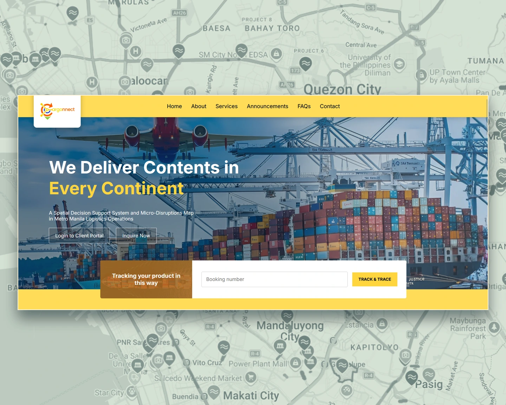

Cargonnect.
Spatial decision support system and Micro-Disruption Map for Metro Manila logistics operations
Contributed as a full-stack developer to a multi-role platform for clients, administrators and drivers. Worked on spatial data for road restrictions, mapping and routing integrations, and dispatch planning. The screenshots show the public landing page and the map with disruption layers.
- PostgreSQL / PostGIS spatial data
- Geocoding, routing and weather APIs
- Cloud-deployed PHP platform
PHP · JavaScript · MySQL · PostGIS · Google Maps APIs · OpenStreetMap · OpenWeather · Azure
Explore live project